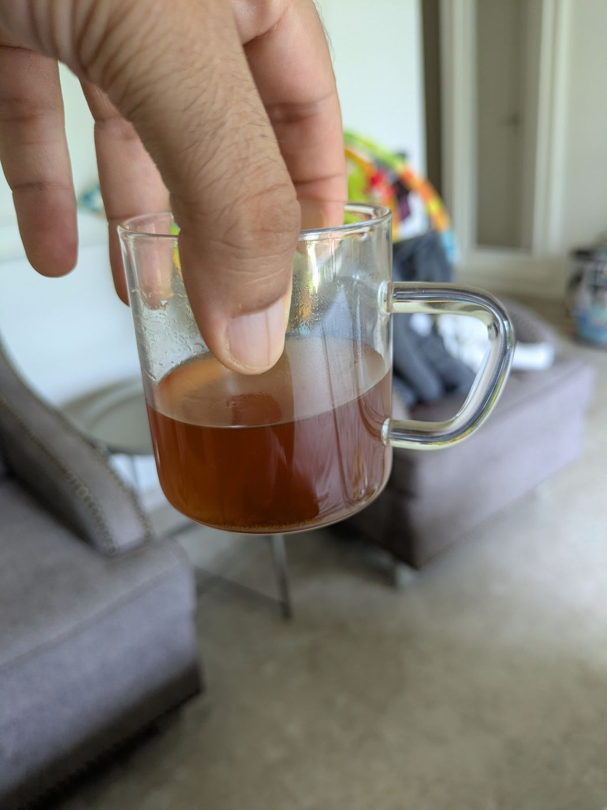
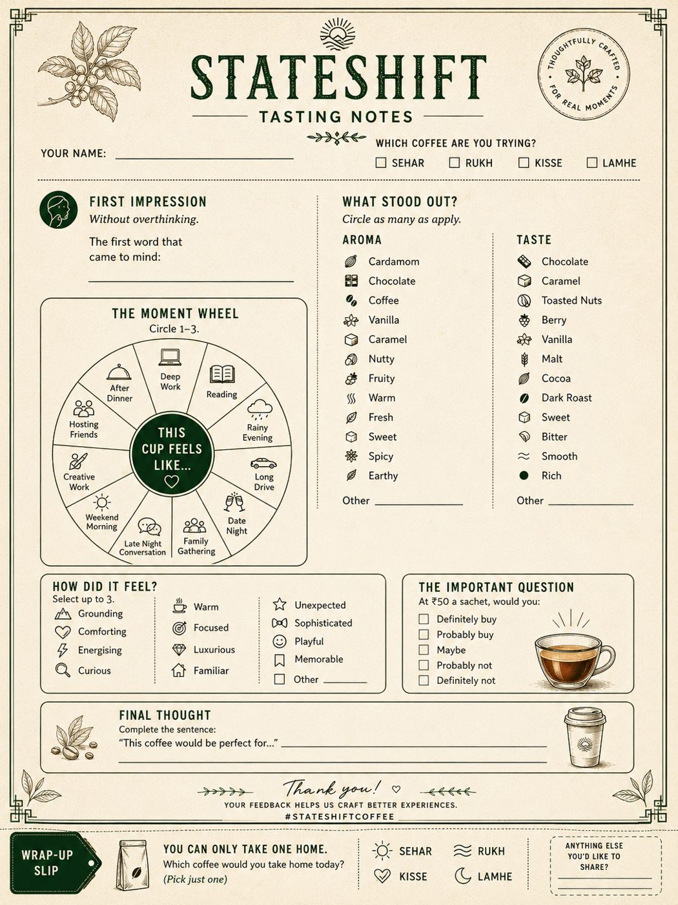

One for the morning, one for the middle, one for the evening — sealed in the week your box ships. The recipes are locked, but the craft is still warm. Founding Tasters drink StateShift while it's still being decided.
Two servings of the bright morning cup. Bergamot, orange peel, clean coffee.
Two servings of the mid-morning reset. Cardamom, dark chocolate, roasted almond.
Two servings of the evening cup. Deep coffee, dark cocoa, and the spice no one can name.
The six steps, and a Moment Wheel card to capture what each cup felt like.
Every Sampler comes with the founder's WhatsApp. What you notice shapes the next batch — that's the deal.


The button above opens WhatsApp with a short note. Tell us who you are and where you are.
Your sachets are weighed and sealed in the same week they ship. Nothing sits on a shelf.
Six cups, six pauses. The brew card walks you through each pause — about five minutes a cup.
Not a star rating — a conversation. What stood out, what didn't, which moment the cup belonged to.
One day StateShift will be a finished thing on a shelf. Right now it is a bench you can pull a chair up to. Founding Tasters drink versions that will never exist again, talk directly with the person who makes them, and are quietly the reason the final blends will taste the way they do.
Shelf-stability testing and FSSAI registration are underway; every box says so plainly. If you want polish, wait for the shelf. If you want fingerprints on the craft — yours among them — this is the only moment that offer exists.